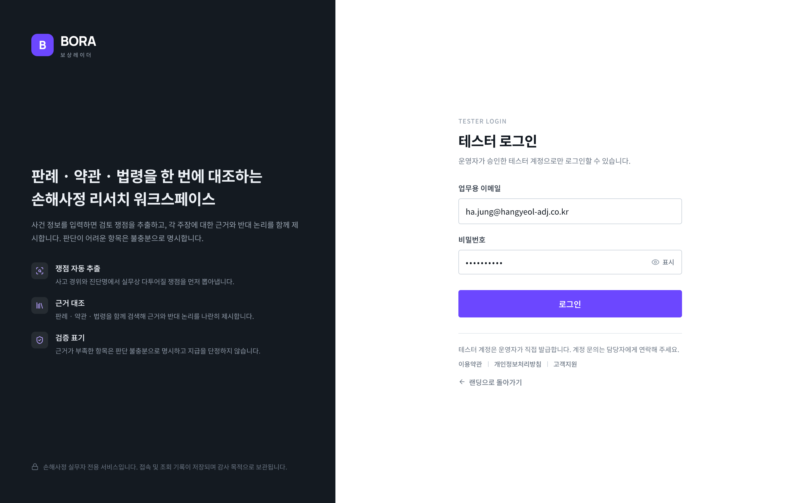
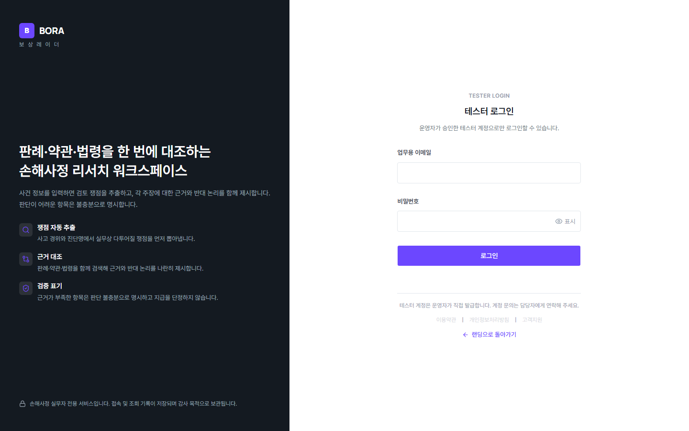

Pencil 원본 (design/exports/03-테스터-로그인.png)

Before — Round 4 (1440px, text-h2/mt-20 기반, 헤드라인 작고 위쪽)

After — Round 5 (1440px, 로컬 헤드라인 크기/위치 실측 보정)



| viewport | 1440×900 (Pencil은 2x export, 실측 CSS 환산 1440×900 상당) | ||
|---|---|---|---|
| commit SHA | Round 4(Before): c210ebff732f2355d52359113762a55515680528(origin에 push됨) · Round 5(After): f6ea25a614782ae60c1e2c0ceaf575483d59087c(plan/SPEC-UI-MIGRATION-001) | ||
| route / scroll 위치 | /login (인증 불필요), top-of-page(fullPage 아님) | ||
| 데이터 상태 | 인증 불필요 화면 — 데이터 상태 없음(정적 렌더링) | ||
| 측정한 주요 차이(Round4 → Round5) |
|
||
| 우측 폼 내부 간격(사용자 승인 후 반영) | 라벨-입력창-버튼 간 세로 간격이 Pencil보다 좁았던 잔여 편차를 사용자에게 보고 후 "폼 내부 간격도 넓혀서 맞추기"로 승인받아 `login-form.tsx`의 `gap-4`→`gap-7`, `gap-1.5`→`gap-2.5`로 확대 반영했다(로그인 화면 전용 컴포넌트, 다른 화면 미공유 확인). `npx vitest run app/login/` 6/6 PASS. | ||